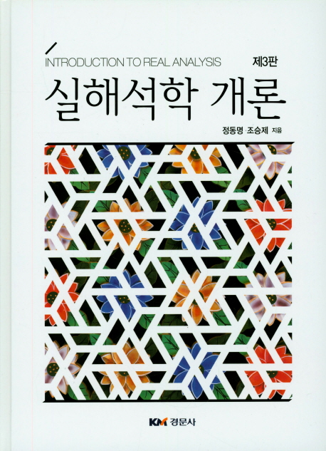

해석학 추천도서

목 차
- 집합과 함수
- 실수계
- 실직선의 위상
- 수렴
- 연속함수
- 미분가능 함수
- 적분가능 함수
- 푸리에 급수
본 저서를 추천하는 이유: 본 해석학 책은 먼저 기초 집합론적 이론을 다루고 나서 실수계, 실수상의
위상(topology)을 다루고, 그 다음에 수열의 수렴, 함수의 극한과 연속함수를 다룬다. 다음으로 미분
가능함수, 적분가능함수를 다룬다. 해석학에서 중요한 내용인 함수열의 미분, 적분을 다수의 해석학
책에서는 별도로 다루지만 본 책에서는 미분, 적분 단원과 함께 다루어서 함수열의 학습에 큰 도움이
될 것으로 기대된다.